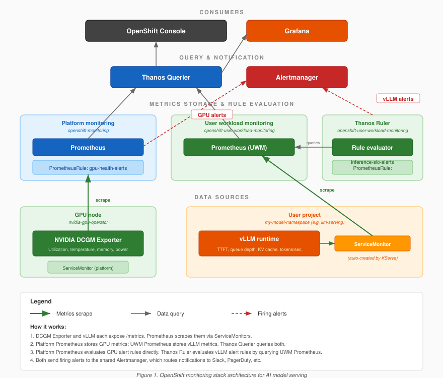

The OpenShift Monitoring Stack
Now that you understand what you need to monitor, this section teaches how OpenShift collects, stores, and exposes metrics.
Prometheus: The Metrics Engine
Prometheus is the foundation of all monitoring in OpenShift. Every metric you see in the OpenShift Console under Observe > Metrics comes from Prometheus.
Prometheus uses a pull model:
-
Prometheus reaches out to your applications and pulls metrics from their HTTP endpoints (typically
/metrics) -
Your application does not need to know Prometheus exists — it just exposes metrics in Prometheus text format
-
By default, Prometheus scrapes every 30 seconds
-
Every scraped metric value is stored with a timestamp and a set of labels in a time-series database
-
Labels are key-value pairs that let you filter, aggregate, and group metrics in queries
Two Prometheus Instances in OpenShift
OpenShift runs two separate Prometheus instances, each with a distinct role:
| Instance | Namespace | What It Monitors | Managed By |
|---|---|---|---|
Platform Monitoring |
|
OpenShift infrastructure: API server, etcd, kubelets, node metrics, DCGM (GPU metrics) |
Red Hat / cluster-admin (pre-configured and always running) |
User Workload Monitoring (UWM) |
|
Your applications: model servers, custom services, anything defined with a ServiceMonitor |
You (must be explicitly enabled) |
Why the Separation Matters
This is a deliberate architectural decision:
-
Blast radius isolation: If a buggy user application emits millions of metrics and overwhelms Prometheus, it will not take down the platform monitoring that keeps OpenShift itself healthy. The platform Prometheus is protected.
-
RBAC boundaries: Platform monitoring data (etcd internals, API server metrics) contains sensitive cluster information. UWM lets platform engineers query their own application metrics without needing cluster-admin access to platform metrics.
-
Independent scaling: User workloads may generate far more metrics than the platform itself. UWM can be independently configured with different retention, resource limits, and storage backends.
User Workload Monitoring is disabled by default in OpenShift.
Until you enable it, Prometheus completely ignores your application pods — even if they expose a /metrics endpoint.
The first thing you will do in the hands-on lab is enable UWM.
Without this step, none of the vLLM inference metrics collected in later chapters will work.
|
Thanos Querier: The Unified View
Thanos Querier sits in front of both Prometheus instances and provides a single query endpoint. When you type a PromQL query in the OpenShift Console’s Metrics tab, you are actually querying Thanos — which fans out the query to both Prometheus instances and merges the results.
This is why you can query both DCGM_FI_DEV_GPU_UTIL (from platform Prometheus) and vllm:kv_cache_usage_perc (from UWM Prometheus) in the same Grafana dashboard — Thanos unifies them.
| You do not need to configure Thanos directly — it is deployed and managed by OpenShift. But understanding that it exists helps explain why GPU metrics (scraped by platform monitoring) and vLLM metrics (scraped by UWM) can appear on the same dashboard. |
Does OpenShift Come with Grafana?
No. OpenShift Container Platform ships with Prometheus, Alertmanager, and a built-in console metrics UI — but no Grafana.
The console’s Observe > Dashboards page provides some pre-built views (etcd, API server, node stats), but these are baked into the console code — they cannot be customized, shared, or extended.
What you get by default:
-
Prometheus (platform + optional User Workload Monitoring) scraping cluster and workload metrics
-
Pre-built PrometheusRules for cluster health alerts (etcd, API server, node conditions)
-
Console dashboards (Observe > Dashboards) — limited, non-customizable
-
Observe > Metrics — raw PromQL query interface for ad-hoc queries
What you do not get:
-
Grafana (Red Hat removed it from the platform monitoring stack in OCP 4.11)
-
Custom dashboards for GPU, vLLM, or any user workload
-
Any RHOAI-specific observability dashboards
This is why the Observability Dashboards chapter of this course installs the Grafana Operator and builds dashboards from scratch — it is the only way to get structured, reusable, shareable dashboards for model serving workloads on the platform.
ServiceMonitor: Telling Prometheus What to Scrape
A ServiceMonitor is a Kubernetes Custom Resource (from the monitoring.coreos.com API group) that tells Prometheus:
-
Which pods to scrape (via label selectors that match a Kubernetes Service)
-
What port to scrape on
-
What path to scrape (usually
/metrics) -
How often to scrape (the interval, typically 30s)
The Discovery Chain
The chain that must be unbroken for metrics to flow:
-
You create a ServiceMonitor with a label selector
-
The selector matches a Kubernetes Service
-
The Service selects Pods (via its own selector)
-
Prometheus discovers those Pods as scrape targets
-
Prometheus pulls
/metricsfrom each Pod every 30s -
Metrics are stored as time series with labels
-
You query them via PromQL in the Console or Grafana
Common Debugging Issues
| Symptom | Likely Cause | How to Debug |
|---|---|---|
No metrics appearing at all |
UWM not enabled |
Check if |
ServiceMonitor exists but no targets |
Label selector mismatch |
Compare ServiceMonitor’s |
Target exists but shows "Down" |
Wrong port or path |
Check that the |
Metrics appear intermittently |
Pod restarts or scrape timeout |
Check pod stability ( |
| In this course, you will not create ServiceMonitors manually. The NVIDIA GPU Operator ships its own ServiceMonitor for DCGM metrics, and RHOAI 3.4 auto-creates one for vLLM metrics when an InferenceService is deployed. You will examine the auto-created ServiceMonitor in the Verify the Metrics Pipeline exercise. |
DCGM Exporter: GPU Metrics Without Extra Work
The NVIDIA Data Center GPU Manager (DCGM) is deployed by the NVIDIA GPU Operator as a DaemonSet — one DCGM exporter pod runs on every node that has an NVIDIA GPU.
Key DCGM Metrics
| Metric | What It Measures | What It Tells You |
|---|---|---|
|
Percentage of time the GPU cores were active |
How busy the GPU is (0% = idle, 100% = fully occupied) |
|
GPU die temperature in Celsius |
Thermal health; sustained temps above 82-85C lead to throttling |
|
Framebuffer (GPU VRAM) used in MB |
How much GPU memory is consumed (model weights + KV cache + overhead) |
|
Framebuffer (GPU VRAM) free in MB |
How much headroom remains for KV cache growth |
|
Current GPU power draw in watts |
Correlates with workload intensity; useful for power budgeting |
Why DCGM Runs on the Node, Not in the Model Pod
-
GPU hardware counters are a system-level resource. DCGM reads directly from the NVIDIA driver, which requires host-level access. Running it as a DaemonSet with appropriate privileges is cleaner than granting every model pod access to GPU hardware counters.
-
One exporter per node, not per pod. A node might have multiple GPUs used by multiple pods. A single DCGM exporter collects metrics for all GPUs on the node, labeled by GPU index.
-
Lifecycle independence. If your model pod crashes, DCGM keeps reporting GPU metrics. This is important because GPU temperature or memory state might be why the pod crashed — you would lose that diagnostic data if metrics collection depended on the crashed pod.
How DCGM Metrics Reach Prometheus
The NVIDIA GPU Operator automatically creates a ServiceMonitor in the nvidia-gpu-operator namespace.
This ServiceMonitor is picked up by the platform Prometheus instance (not UWM), since the GPU Operator is cluster infrastructure.
You do not need to create a ServiceMonitor for DCGM metrics.
They are already being collected.
In the lab, you will verify this by querying DCGM_FI_DEV_GPU_UTIL in the OpenShift Console — it should already have data, even before you enable UWM.
User Workload Monitoring: What We Are Enabling
When you set enableUserWorkload: true in the cluster-monitoring-config ConfigMap, the Cluster Monitoring Operator deploys several new components into the openshift-user-workload-monitoring namespace:
-
prometheus-user-workload— A dedicated Prometheus instance that watches for ServiceMonitors and PodMonitors in user namespaces and scrapes the matching targets -
thanos-ruler-user-workload— Evaluates PrometheusRule resources in user namespaces (this is what fires your custom alerts) -
Supporting components — Prometheus operator instances and config reloaders to manage the lifecycle
The Two ConfigMaps
You will apply two ConfigMaps in the lab:
ConfigMap 1: cluster-monitoring-config (in openshift-monitoring):
This is the "on switch" for UWM.
It tells the Cluster Monitoring Operator to deploy the UWM components.
This requires cluster-admin privileges because it affects cluster-wide infrastructure.
ConfigMap 2: user-workload-monitoring-config (in openshift-user-workload-monitoring):
This configures how UWM Prometheus behaves — retention period (15 days) and log level (debug for lab troubleshooting, info in production).
| Apply the UWM configuration ConfigMap first (or at the same time as enabling UWM). When UWM starts up, it reads this ConfigMap immediately. If the ConfigMap does not exist yet, UWM starts with defaults and then requires a restart when you add it later. |
The Complete Metrics Pipeline
The following diagram shows the complete architecture — data sources at the bottom, the two Prometheus instances in the middle, and Thanos Querier unifying queries at the top:

Here is the complete picture of how metrics flow from source to consumer:
-
GPU metrics (DCGM) flow through platform Prometheus — already running, no action needed
-
Container metrics (kubelet/cAdvisor) flow through platform Prometheus — always available
-
Application metrics (vLLM) flow through UWM Prometheus — requires enabling UWM (this chapter) and an auto-created ServiceMonitor (next chapter)
All three sources are queryable through Thanos Querier, which provides a unified query endpoint for the OpenShift Console and Grafana.